Thursday · Literature
The (c. 1919–1935): Black arts after the
After World War I, Black writers, editors, and artists concentrated in Harlem and other northern cities produced a surge of poems, novels, magazines, and criticism. The period’s own keywords included ; “” is a later label for a scene that was never only Harlem.
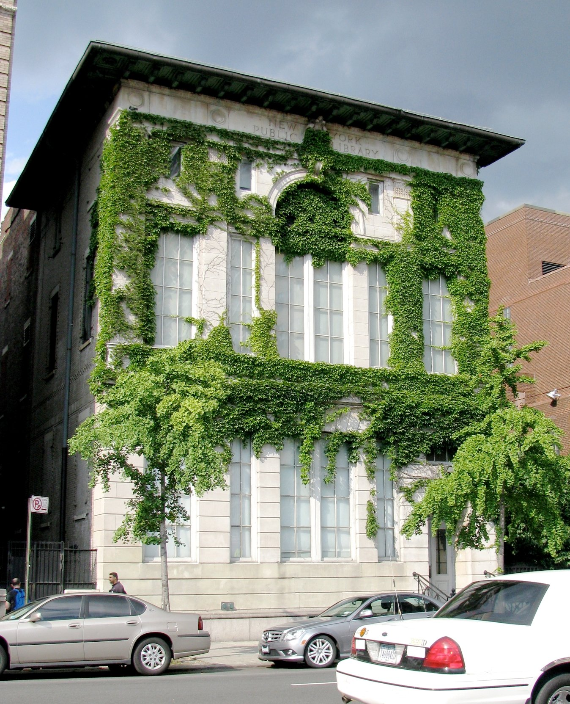
{kind=link}
“” is a later critical and teaching name. In the 1920s people more often said , , or simply named magazines, salons, and streets. The arts boom was real; the geographic label can overstate Harlem as the only stage. Chicago’s South Side, Washington, D.C., and other cities had their own Black literary and musical scenes in the same years. The dates here run roughly from the postwar and early magazine decade through the mid-1930s, when Depression economics and new political pressures changed the publishing and patronage map. This lesson is about literature and print culture first — poems, novels, anthologies, Crisis and — with music and nightlife named as context, not as a nightclub tour. is an earlier Thursday in this archive; it overlaps these years in London and Paris but is a different public and a different set of books. Existentialism and the Latin American Boom are later literature capsules and are not repeated here.
Select any words, or tap a dotted term.
- 1910–19 Migration and magazines The accelerates Black movement from the South to northern cities. (NAACP, founded 1910 under ’s early editorship) and, later, (National Urban League, 1923) become major print venues for poems, essays, and fiction.
- 1919 Red Summer / McKay Racial violence across U.S. cities in the “.” ’s sonnet “” circulates widely that year as a response poem — militant, formal, and quotable.
- 1921–25 Locke, Hughes, Cullen ’s editorial work at ; (1921) on Broadway as a visible Black musical hit; ’s Harlem issue (March 1925) and book (1925); ’s “” (1921 in ) and (1926).
- 1926–28 Novels and debates ’s (1926) sparks argument over white patronage and Harlem as spectacle. McKay’s (1928). (1926), the short-lived younger artists’ magazine. ’s Color (1925) and later volumes keep formal lyric prestige in view.
- 1920s–30s Hurston and folklore publishes stories and folklore collecting in the late 1920s and early 1930s; appears in 1935. (1937) sits just after this lesson’s core window — named in After.
- 1929–35 Crash and thinning The stock-market crash cuts patronage and magazine budgets. By the mid-1930s many writers disperse into work, journalism, or other cities. Critics later periodize a “Renaissance” ending here.
- 1930s–40s After-edges crystallizes among Black students in Paris (Césaire, Senghor, Damas). Wright’s (1940) marks a harder naturalist turn often placed after label. Named only as After.
Before
Migration, magazines, and a northern address book
The literary surge later called the did not begin with a manifesto. It began with people moving. From the 1910s into the 1920s, the pulled hundreds of thousands of African Americans out of the Jim Crow South toward industrial jobs and denser Black neighborhoods in New York, Chicago, Detroit, Philadelphia, and elsewhere. Harlem — especially the blocks around 135th Street and Lenox and Seventh Avenues — became one of the densest of those destinations. Landlords and speculators had opened former white housing stock to Black tenants; churches, theatres, and storefronts followed. By the early 1920s a reader could walk between a library branch, a magazine office, a meeting, and a cabaret without leaving a few avenues.
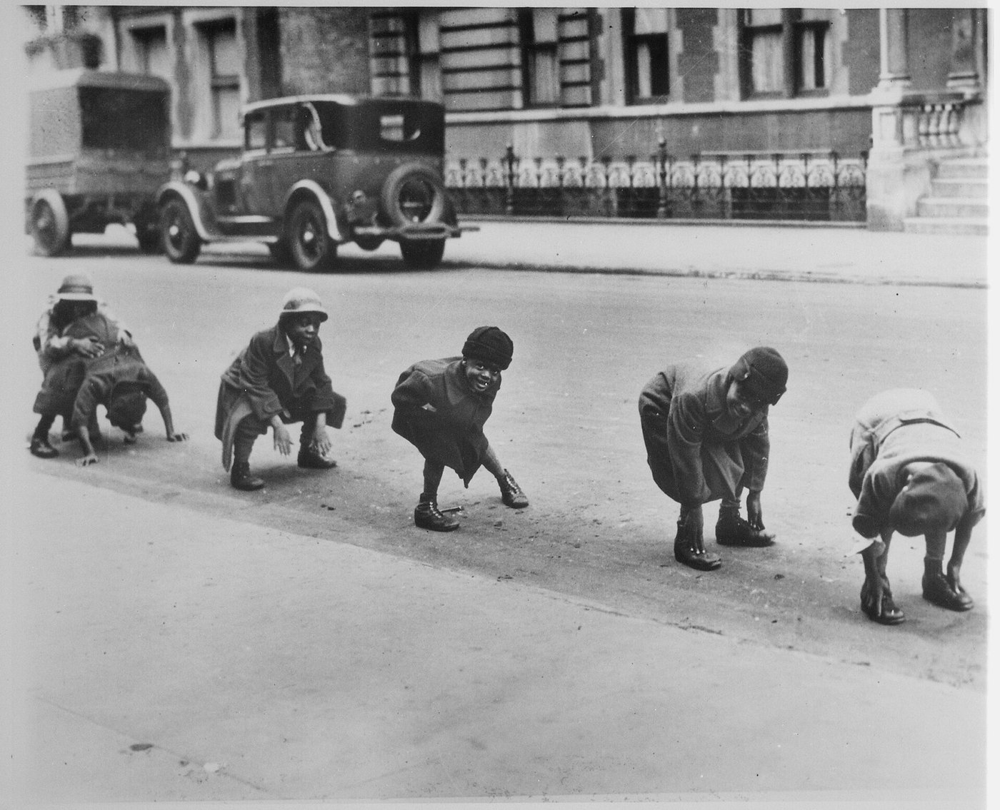
{kind=link}
Print infrastructure already existed. , the NAACP magazine launched in 1910, reached a national Black audience with news, argument, and — under literary editor — poems and fiction. followed in 1923 from the National Urban League and ran contests that paid younger writers in cash and attention. Those magazines mattered more than any single bookstore: they were monthly proof that Black writing had an address list. Behind them sat earlier intellectual furniture — ’s Souls of Black Folk (1903), debates over Booker T. Washington’s industrial program, and the wartime service and postwar betrayals that made “” sound like a political claim, not a fashion label.
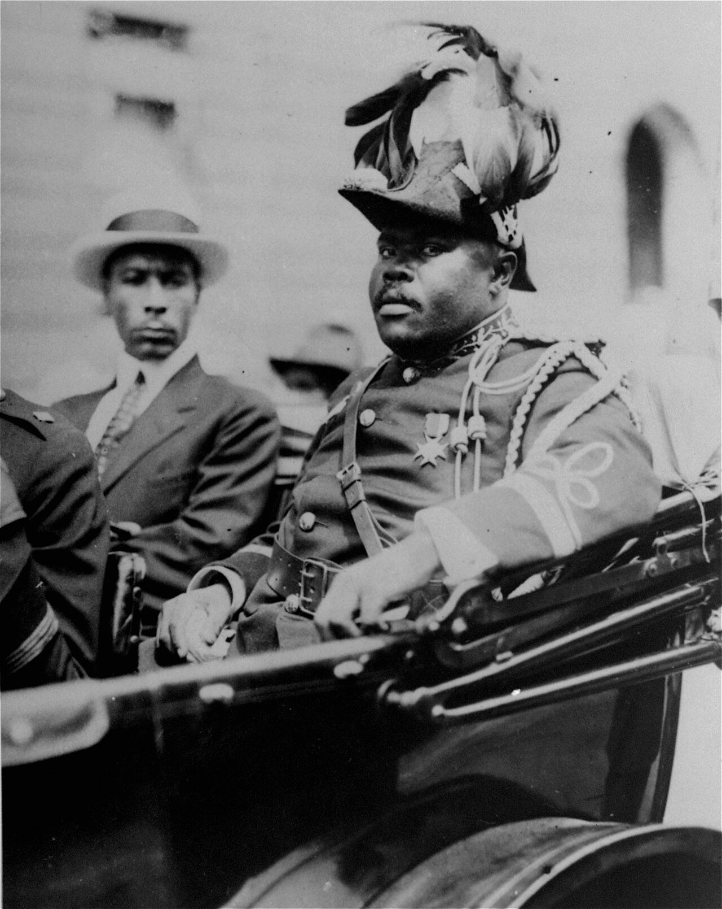
.jpg){kind=link}
Politics pressed from every side. The of 1919 brought white-on-Black riots and lynchings across multiple cities. ’s sonnet “,” published that year, answered in Shakespearean form: dignified resistance, no soft ending. ’s filled Harlem streets with uniforms and pageantry in the early 1920s, offering a mass alternative to NAACP respectability politics. The literary “Renaissance” grew in that argumentative weather — uplift versus vernacular, integration versus separatism, patronage versus independence — not in a vacuum of pure aesthetics.
The era
New Negro print culture, 1919 to the mid-1930s
Call the core years roughly 1919 to 1935. On one edge: postwar violence, Migration density, and McKay’s circulating sonnet. On the other: the Depression’s cuts to patronage, the thinning of magazine budgets, and the turn of many writers toward New Deal employment or other cities. Between those poles sits a concrete publishing run. Hughes’s “” appears in in 1921. ’s (1923) mixes verse and prose outside a simple Harlem postcard. (1921) proves Black musical theatre can sell on Broadway. Locke’s Harlem issue (March 1925) and the book (1925) package essays, poems, fiction, and art as a national exhibit. Hughes’s (1926), Cullen’s Color (1925), Larsen’s Quicksand (1928) and (1929), McKay’s (1928), and Hurston’s folklore work through (1935) fill out a shelf that is poems and novels and anthropology at once.
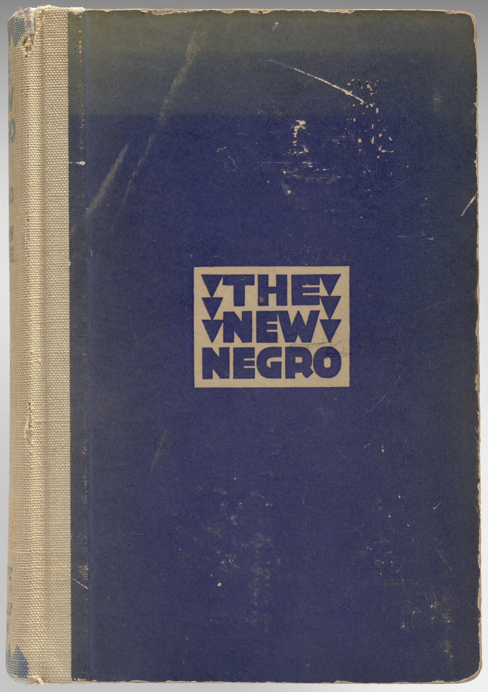
.jpg){kind=link}
What held the scene together was not one style. Hughes pushed blues and jazz rhythms into poetry and defended vernacular speech. Cullen kept sonnets and traditional meters and asked, in “,” what Africa could mean to a Christian American. Larsen wrote compact novels of class and racial . Thurman and the group (1926) needled older respectability politics. Locke argued that art excellence itself was a political instrument. White patrons and brokers — including , whose (1926) sold widely and offended widely — shaped audiences and resentments at the same time. Nightclubs such as the hired Black performers for largely white rooms; that economy of spectacle sat beside, and sometimes funded, the quieter economy of little magazines and prize contests.
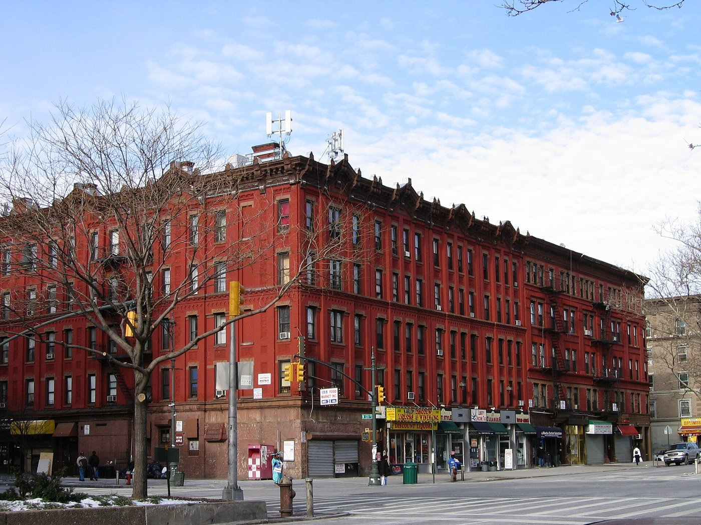
{kind=link}
Harlem was the brand and not the whole map. Chicago’s South Side — , the “” — sustained newspapers, clubs, and writers in the same decades. Washington, D.C., and other cities had salons and campuses of their own. When later syllabi say “,” they are often using a neighborhood name as shorthand for a multi-city Black arts boom whose print capital happened to be unusually visible in upper Manhattan.
How it showed up
Poems, anthologies, novels — and four to read slowly
On the page looks like several methods at once. There are Crisis and poems meant to be clipped and memorized. There is Locke’s anthology as a curated national exhibit. There are novels of middle-class manners (Fauset, Larsen) and novels of proletarian nightlife (McKay). There is Toomer’s hybrid . There is Hurston’s insistence that southern Black speech and folklore are literary material, not dialect comedy. Deepen a few works and the “movement” becomes a set of checkable books instead of a mood.
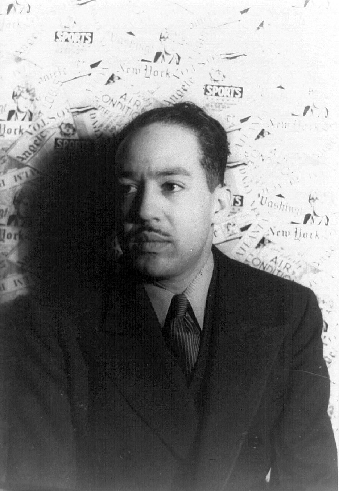
Langston Hughes
1901–1967
Poet of “” (Crisis, 1921) and (1926). Made blues cadence and into literary addresses without abandoning craft.
, photographed by in 1936 (Library of Congress).Carl Van Vechten / Library of Congress / Public domain
{kind=link}
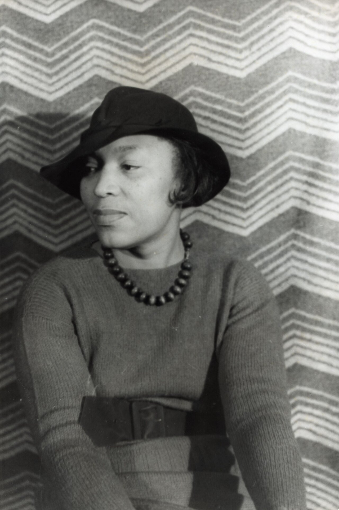
Zora Neale Hurston
1891–1960
Story writer, folklorist, novelist. Harlem participant and southern fieldworker; (1935). (1937) belongs in After by calendar.
, photographed by in 1938 (Library of Congress). The date is late for the core Renaissance window; the career begins earlier.Carl Van Vechten / Library of Congress / Public domain
.jpg){kind=link}
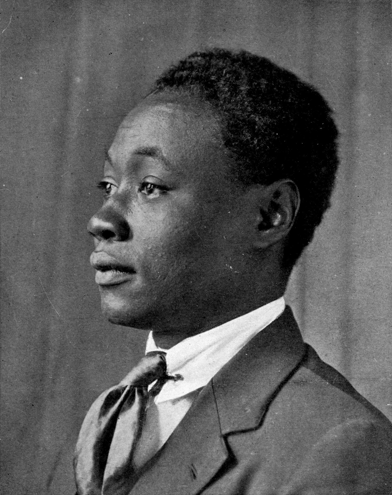
Claude McKay
1889–1948
Jamaican-born poet of “” (1919) and novelist of (1928). Sonnets and street novels in the same career.
, portrait associated with his early 1920s publications (Internet Archive / public domain scan lineage).Unknown photographer / Internet Archive scan lineage / Wikimedia Commons / Public domain
{kind=link}
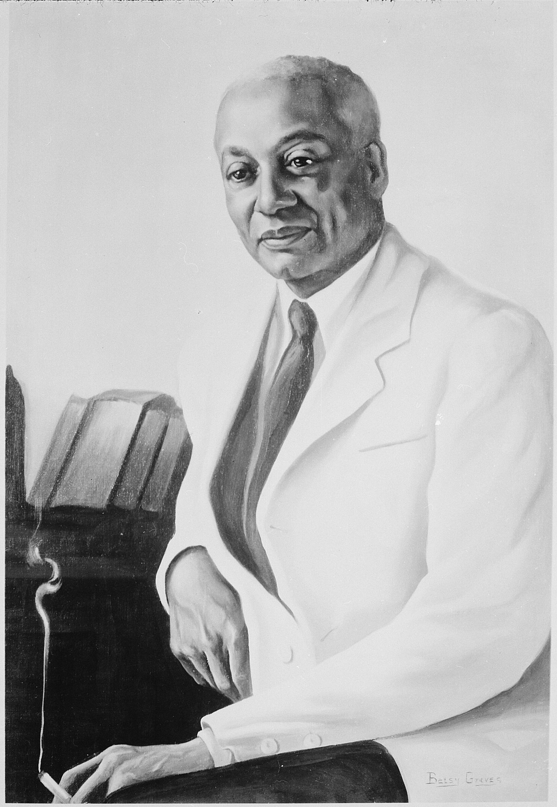
Alain Locke
1885–1954
Philosopher-editor. Harlem issue (1925) and anthology made “” a table of contents, not only a slogan.
, portrait by Betsy Graves Reyneau (National Archives collection). Editor of and a central critic-organizer of the period’s public image.Betsy Graves Reyneau / U.S. National Archives / Wikimedia Commons / Public domain
{kind=link}
Hughes’s “” is only a few sentences long and still does major work: it places Black historical memory on the Euphrates, Congo, Nile, and Mississippi, so that American racism is not the first chapter of the story. , as title poem and as 1926 book, stages a blues musician on and lets the piano’s syncopation shape the line breaks. Read aloud, the poem is an argument that popular Black music belongs inside “serious” literature — an argument Cullen’s camp did not always accept.
Locke’s is the period’s exhibit catalog. It gathers and James Weldon Johnson beside younger poets, prints ’s visual language, and frames art as evidence for political recognition. It is also a gatekeeping document: what Locke includes becomes “the movement” for many later readers. McKay’s (1928) sold extremely well and drew fire — including from — for dwelling on cabarets, labor, and sex. That fight is in miniature: who gets to define the public image of Black life, and for which audience.
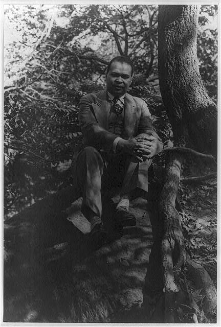
{kind=link}
Cullen’s “” asks what Africa means when the speaker’s daily religion and schooling are Christian and American. The poem’s formal control is part of its meaning: Cullen refused the idea that Black poetry must sound like blues to be authentic. Hurston, working partly inside Harlem networks and partly on southern collecting trips, treated folklore as literature with authors in the oral tradition. (1935) is fieldwork as book; (1937) — just after this lesson’s core dates — turns that ear for speech into a novel of a woman’s life in Florida. Name also, without full essays here: ’s editorial gatekeeping; ’s ; ’s and colorism novel The Blacker the Berry; on dust jackets and magazine pages.
Same time elsewhere
High modernism, Chicago, and Paris stages
The same calendar that holds also holds ’s London and Paris experiments — Eliot’s The Waste Land (1922), Joyce’s Ulysses (1922), Woolf’s Mrs Dalloway (1925). Those books share a decade with Locke and Hughes without sharing a public. White modernist networks and magazines occasionally overlapped through patrons, parties, and expatriate travel, but subscriber list was not the Criterion subscriber list. Capsules already has a Thursday on ; keep it adjacent, not collapsed. The useful comparison is institutional: little magazines, anthologies, and prestige fights happening in parallel, aimed at different readers.
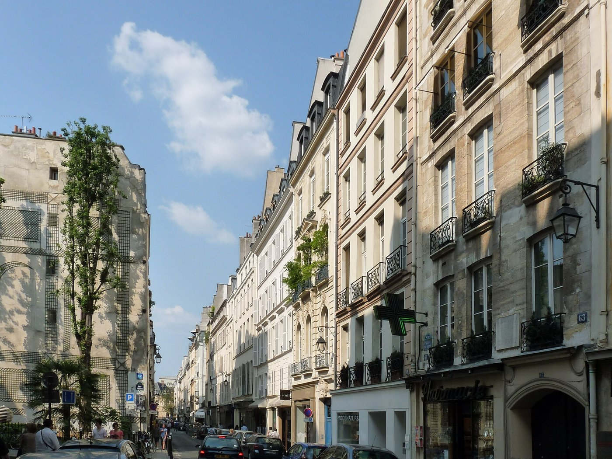
{kind=link}
Paris specifically mattered in two different ways. , born in St. Louis, became a sensation in 1920s Paris music halls — a Black American star whose career ran through European revue economies rather than through Crisis poetry contests. Separately, in the 1930s, Caribbean and African students in Paris (, , Léon Damas) began the conversations later labeled . That movement’s landmark texts, including Césaire’s Cahier d’un retour au pays natal (1939), sit at the edge of or after this lesson’s U.S. window. They are not a copy of Harlem; they are another Black literary politics in French, reading surrealism and colonial schooling through their own archives.
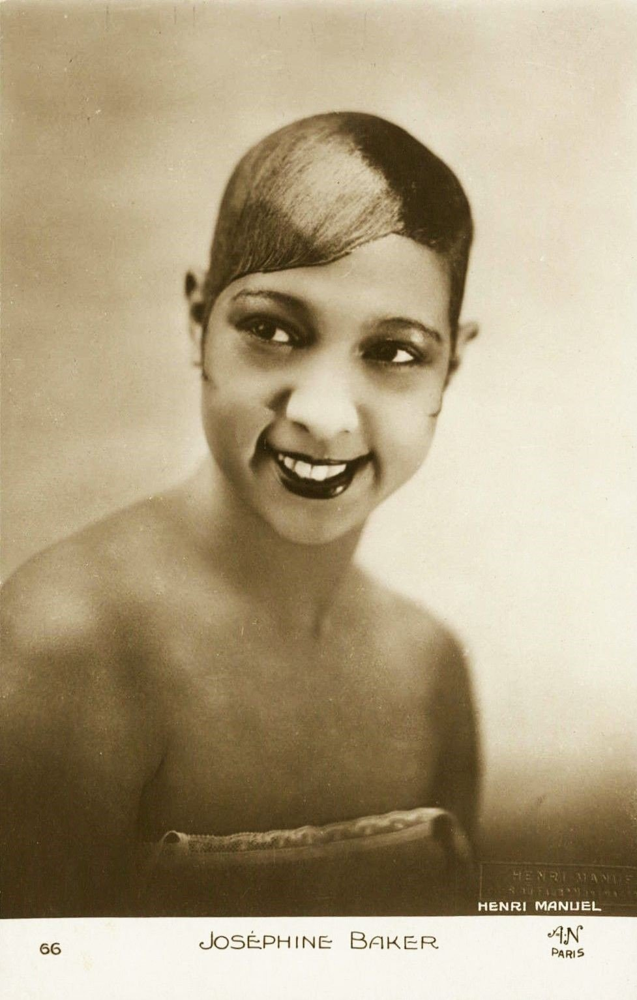
{kind=link}
Inside the United States, Chicago’s South Side was not a satellite of 135th Street. supported the Chicago Defender, clubs that incubated jazz careers, and writers who would later dominate 1940s protest fiction. ’s major fame comes after this lesson’s core dates, but the city’s institutions were already contemporaneous with Harlem’s. Washington, D.C., Howard University circles, and other campuses likewise produced editors and poets who appear in the same magazines. “” as a course title is convenient; the 1920s Black literary map was multi-city.
After
Depression thinning, Hurston’s 1937 novel, harder turns
The 1929 crash damaged the patronage and magazine economy that had floated contests, parties, and small print runs. By the mid-1930s many writers were on the move — into folklore and guidebook work, into journalism, into other regions. Critics later drew a period line here and called what came before a Renaissance. Lines like that are teaching tools; careers ignored them. Hurston’s appears in 1937, just outside many syllabi’s “1920s Harlem” frame, and is still one of the most taught novels associated with the era’s people. Wright’s (1940) is often staged as a break toward Chicago naturalism and protest — another After-edge, not a weekly lesson of its own here.
Internationally, ’s 1930s–40s texts and postwar decolonization literature reopen questions debates had already posed: who controls the image of Black life, which language counts as literary, and whether art should persuade a hostile majority or speak first to a Black public. Later recoveries — rediscovery of Hurston, renewed teaching of Larsen and Toomer, archival work at the — continually revise which Renaissance books stay in print. The label remains useful if you remember it is a label: a later name for a real cluster of magazines, streets, and books.
A question
A question to keep asking
If “” is a later classroom name, what changes when you read the same years under the period’s own banner — — and keep Chicago and Paris in the same frame instead of treating Harlem as the only stage?
Fun fact
Hughes’s “The Negro Speaks of Rivers” was written on a train to Mexico
was nineteen, riding the train to visit his father in Mexico, when he drafted “.” The poem appeared in in June 1921. The rivers named — Euphrates, Congo, Nile, Mississippi — are a geographic claim stitched into a few short lines: Black history as deep time, not only as American crisis news. and circle helped put the poem in front of a national Black readership years before made Hughes a book-length name.